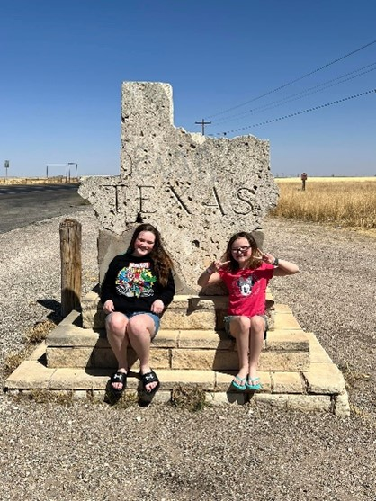
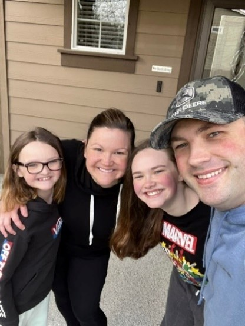

|  | We are the Veillette family and our sticker company is called “Sassy Stickers”. We are a very active family. Things we love are paddleboarding, swimming, kayaking, bow hunting, knife and axe throwing, shooting, gymnastics, cheer, puzzles, try new restaurants, theme parks, hiking, crafts, puzzles, going to and watching sports, and most of all, being together and with friends. Alexia the oldest is very creative, goes to Smithson Valley High School, and with this sticker company hopes to save for a car soon! Ava loves cheer and creating art on her Ipad. She also loves video games and wants to earn money for Roblox and more craft supplies. |
Casey, aka, stay at home momma, is a licensed stylist, and loves to be creative and meet people in addition to momming. She is saving for an Ipad so she doesn’t have to steal one of the girl’s to make our awesome stickers. Tyler, aka, dad, loves to do everything outside and support his daughter’s and wife’s crafting dreams. Thank you for shopping our sticker collection and I hope they bring you joy! |
 |